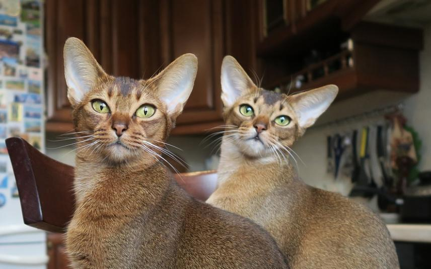

Eigenschappen
- Andere naam: geen. De langharige variëteit wordt somali genoemd.
- Gewicht: 2-5 kg.
- Karakter: actief, eigengereid, extravert, zeer gehecht aan eigenaar.
- Kleuren: alle abessijnen bezitten het typerende Ta-gen dat een getickt tabbypatroon veroorzaakt. De "wildkleur" (zwart) en "sorrel" (cinnamon) zijn de klassieke kleuren. Ook zijn er blauwe en fawn versies. Tevens worden er ook op beperkte schaal andere kleuren gefokt: rood, crème, schildpad, chocolade en lila. Al deze tinten worden ook in de zilverversies gefokt.
- ongeveer levenstijd: 9-13 jaren

terug naar rassen